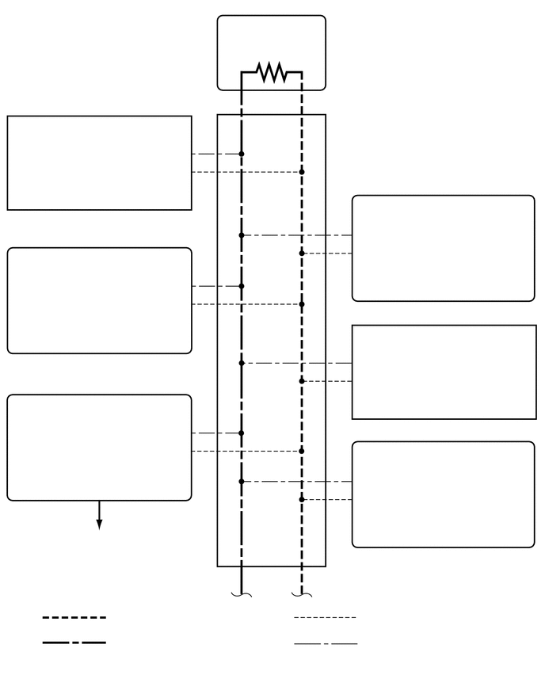

0.25,1.667 2.417,1.865
2.167,0.198
10
false
空气囊传感器总成*2
0.25,3.417 1.823,4.031
1.573,0.615
10
false
空调放大器总成*1
0.25,5.333 2.417,5.833
2.167,0.5
10
false
认证 ECU（智能钥匙 ECU 总成）*1*4
0.458,7 2.5,7.198
2.042,0.198
10
false
至 LIN 通信系统
4.802,2.75 6.969,2.948
2.167,0.198
10
false
动力转向 ECU 总成*1
4.802,4.417 6.917,4.771
2.115,0.354
10
false
转向传感器（带传感器的螺旋电缆分总成）*2*3
4.802,5.969 7,6.167
2.198,0.198
10
false
导航接收器总成*1*5
4.792,6.469 6.5,6.917
1.708,0.448
10
false
无线电收音机和显示屏接收器总成*1*6
3.385,0.552 4,0.75
0.615,0.198
10
false
120 Ω
0.75,0.583 2.75,0.781
2,0.198
10
false
组合仪表总成*1
4.344,7.302 7,7.583
2.656,0.281
10
false
2 号 CAN 接线连接器
1.458,8.031 5.438,8.229
3.979,0.198
10
false
：CAN 主总线 (CANH)
1.458,8.354 5.438,8.552
3.979,0.198
10
false
：CAN 主总线 (CANL)
4.74,8.021 7.021,8.25
2.281,0.229
10
false
：CAN 支线 (CANH)
4.74,8.365 7.021,8.594
2.281,0.229
10
false
：CAN 支线 (CANL)
4.667,0.219 7.156,0.417
2.49,0.198
10
false
*1：可存储 CAN DTC
4.667,0.583 7.156,0.75
2.49,0.167
10
false
*2：不能存储 CAN DTC
4.667,0.969 7.156,1.167
2.49,0.198
10
false
*3：带 VSC
4.667,1.333 7.156,1.531
2.49,0.198
10
false
*4：带智能进入和起动系统
4.667,1.719 7.156,1.917
2.49,0.198
10
false
*5：导航接收器型
4.667,2.083 7.156,2.281
2.49,0.198
10
false
*6：无线电收音机和显示屏型